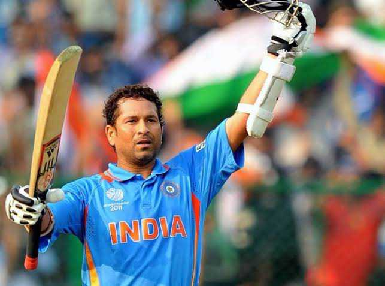

Cricket Legends
Rohit Sharma
Rohit Gurunath Sharma (born 30 April 1987) is an Indian international cricketer who currently plays for and captains the India national cricket team in Test and One Day International (ODI) matches.

Sachin Tendulkar
Known as the 'God of Cricket', Sachin has scored 100 centuries in international cricket.

virat kohli
Virat Kohli was born on November 5, 1988, in Delhi, India. He grew up in Delhi and was one of the first to train at the West Delhi Cricket Academy, created in 1998. In 2002 he played for the Delhi Under-15 team and was the highest run scorer in the 2003–04 Vijay Merchant Trophy, playing for the Delhi Under-17 team.